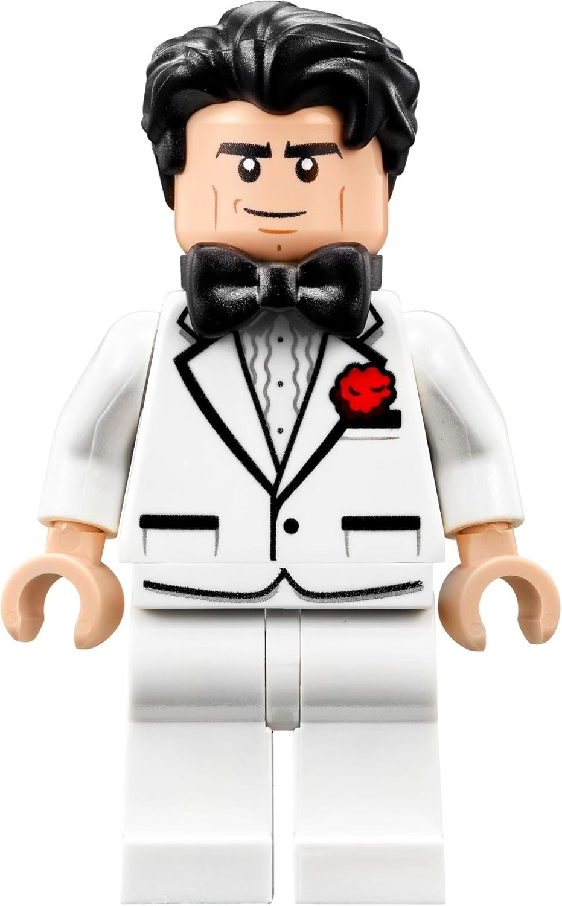
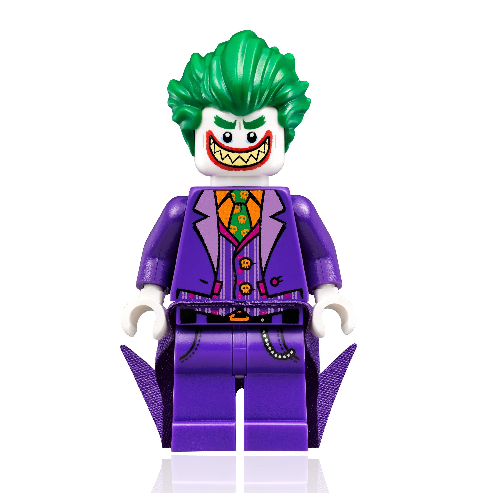
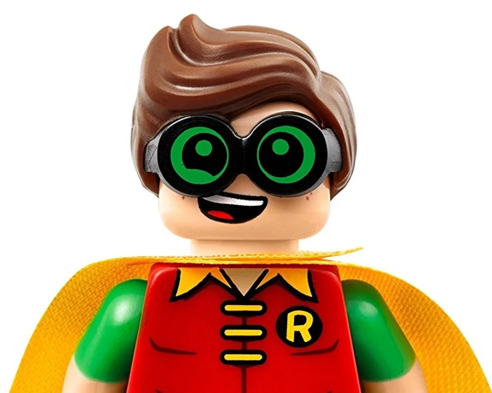
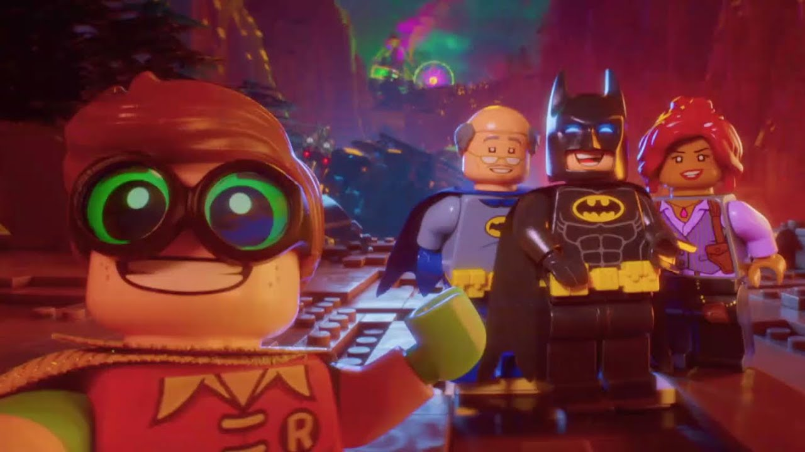

Introduction
This page is dedicated to my favorite movie, The Lego Batman Movie. In here, I'll be explaining what the movie is about, and some important points to take from it!
Brief Summary
The LEGO Batman Movie is about Batman, who thinks he’s the coolest hero ever and likes to work alone. He fights crime in Gotham City but refuses to admit he needs anyone’s help. When the Joker creates a huge plan to destroy Gotham and prove he’s Batman’s biggest enemy, things start to turn crazy. Batman accidentally adopts a super-excited orphan named Dick Grayson, who becomes Robin. Along with Alfred, his butler, and Barbara Gordon, the new police commissioner, they try to stop the Joker’s chaos. Throughout the movie, Batman learns that being tough doesn’t mean shutting people out. By the end, he realizes that teamwork and family make him stronger than being a solo hero.
Main Characters
Bruce Wayne/Batman
Bruce Wayne, also known as Batman, is portrayed as a confident, independent, and egotistical hero who thrives on being admired. He takes pride in his skills and fame, often bragging about how he doesn’t need anyone else. Deep down, though, Bruce hides a lot of loneliness and fear of emotional connection, stemming from the loss of his parents. He uses his Batman persona to avoid dealing with his feelings and to maintain control over his world. At the beginning of the movie, he isolates himself in his huge mansion, refusing to acknowledge Alfred’s advice or the affection of others. His adoption of Dick Grayson happens by accident, but it becomes a turning point in his growth. Through his interactions with Robin, Alfred, and Barbara Gordon, Bruce slowly begins to confront his fear of family and vulnerability. He learns that being a hero isn’t just about fighting villains—it’s about caring for others and trusting them. By the end, Bruce transforms from a selfish loner into a true leader who values teamwork and love. His journey shows that emotional strength can be just as heroic as physical bravery.
The Joker
The Joker is portrayed as both hilarious and surprisingly emotional for a villain. He craves recognition from Batman and wants to be acknowledged as his greatest enemy. Unlike traditional versions of the Joker, this one acts almost like a rejected partner, feeling hurt when Batman insists he doesn’t “need” him. His motivation throughout the movie comes from this need for validation rather than pure chaos or destruction. When Batman denies their “special” rivalry, the Joker becomes determined to prove his importance by creating a massive plan to take over Gotham. Despite his over-the-top evil schemes, there’s a layer of vulnerability underneath his clownish personality. His actions reflect how badly he wants connection, even if it comes through conflict. By the end, when Batman finally admits that the Joker matters to him, it gives the Joker the emotional satisfaction he’s been chasing. This moment shows that the Joker isn’t just about villainy—he’s also driven by a deep desire to belong and be noticed. His character cleverly mirrors Batman’s loneliness, making their relationship one of rivalry and weird emotional dependency.
Dick Grayson/Robin
He is an innocent, and endlessly enthusiastic kid who just wants a family. He starts off as an orphan who accidentally gets adopted by Bruce Wayne without Bruce realizing it. Robin idolizes Batman, seeing him as the coolest hero ever, and wants nothing more than to be part of his team. His cheerful and loving personality contrasts sharply with Batman’s brooding and independent nature. Throughout the movie, Robin brings warmth and optimism into Batman’s lonely world, showing him the joy of teamwork and connection. Even though he’s inexperienced and sometimes clumsy, his bravery and big heart make him a true hero in his own right. Robin’s constant positivity challenges Batman to open up emotionally and accept help from others. He also symbolizes the idea that family doesn’t have to be blood—it’s the people who choose to stand by you. By the end, Robin becomes not just Batman’s sidekick but his emotional anchor and adopted son. His character represents hope, innocence, and the power of love to break through loneliness and fear.
Analysis
In this movie, Bruce Wayne is more than a parody of the dark hero most know, he’s a man defined by loss, fear, and the armor he’s built around his heart. His obsession with control and self-reliance is less confidence and more a survival mechanism born from childhood trauma. Beneath the jokes and bravado lies a desperate attempt to avoid ever feeling abandoned again. Batman’s loneliness is his own creation, a fortress made of pride and pain, where laughter masks grief and heroism becomes a way to hide from human connection. His life is full of victories but empty of warmth, and the movie treats that emptiness with empathy rather than ridicule.
When Robin, Alfred, and even the Joker enter his world, they force Batman to confront what he’s truly afraid of—not villains, but vulnerability. Robin’s boundless optimism and Alfred’s quiet wisdom chip away at his walls, showing him that love isn’t weakness but courage in its purest form. The Joker’s longing for acknowledgment, though comically twisted, mirrors Batman’s own need to be seen. By the end, when Batman finally admits he needs others, his act of emotional surrender feels like the bravest thing he’s ever done. The film’s heart lies in that truth: real strength isn’t found in solitude or perfection, but in the fragile, terrifying act of letting people in.
